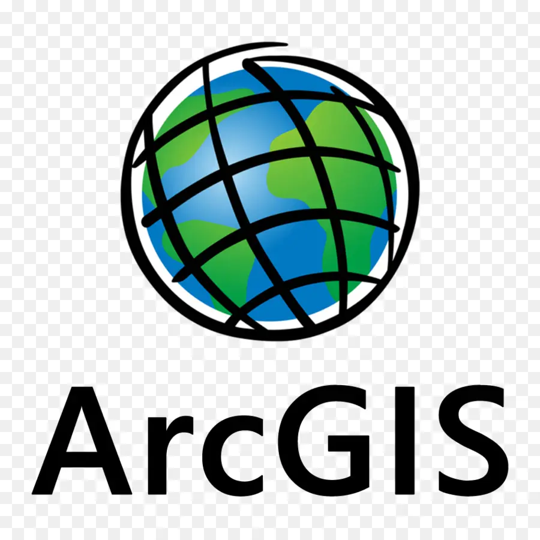
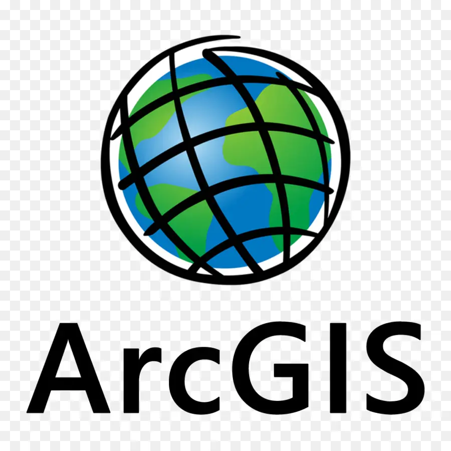

Hello, I'm Beatriz Peres!
Geospatial engineer and currently a student at the University of Salzburg, Austria. I am an Erasmus Mundus scholarship holder for the MSc Copernicus in Digital Earth Program and I will be specializing in Geodata Science at the University of Southern Brittany, France. Explore my ePortfolio to learn more about my journey and expertise.
About Me
I'm a portuguese geospatial engineer with a passion for exploring and advancing technology in Earth observation and spatial data analysis. Over the past two years, I've specialized in working with LiDAR data, quality control, data assessment, and the operation of topographic instruments, drones, photogrammetry, and survey and monitoring equipment. Currently, I'm pursuing my Master's degree in EMJM Copernicus in Digital Earth, where I continue to expand my skills and knowledge in the geo-data track. I consider myself driven and ambitious and I always try to learn and grow more, pushing the boundaries of my expertise.
Outside of work and studies, I enjoy outdoor activities like hiking, climbing, and camping, which keep me connected to some of the landscapes I study.


Education
Bachelor's in Geospatial Engineering
From September 2019 to June 2021, I completed my second bachelor's degree at the Faculty of Sciences, University of Lisbon , specializing in Geospatial Engineering. This experience helped me transition into the field of geospatial science, gaining technical skills in spatial data analysis.
Bachelor's in Art and Heritage Sciences
From September 2016 to June 2019, I pursued a bachelor's degree in Art and Heritage Sciences, with a specialization track in Restoration and Conservation of fine arts at the Faculty of Fine Arts, University of Lisbon. During this time, I gained a strong grounding in art and heritage science.
In 2018, I participated in an Erasmus program, studying for six months at the Fine Arts Academy of Rome , where I expanded my knowledge and artistic techniques.
High School
Studied in the arts area, focusing on developing a foundation in visual and creative skills.
Skills
I have experience working with aerial LiDAR, mobile mapping, and UAV-based photogrammetry. Skilled in laser scanning, Digital Terrain Model (DTM) creation and modeling, feature extraction, structure monitoring, stockpile volume measurement, and GeoData quality control.
Languages
- Portuguese (Native)
- English (C1)
- Italian (B2)
Software & Tools
 


Work Experience
Barista (October 2020 - March 2022)
Worked as a Barista, gaining valuable social skills, and learning how to effectively interact with customers. Developed strong communication abilities and customer service experience.
Geospatial Engineering Intern at Geotrilho (April 2022 - September 2022)
Learned the basics of topographic surveys, feature extraction techniques, and surveying methods such as TLS, MLS, and ALS.
Geospatial Engineer at Geotrilho (September 2022 - July 2024)
Specialized in the following tasks:
- Aerial LiDAR
- Mobile Mapping
- Photogrammetry based in UAV
- Creating and modeling Digital Terrain Models, including feature extraction
- Structure Monitoring
- Stockpile Volume Measurement
- Inspection and Quality Control of GeoData
Projects
Details about some of my key projects...
Contact me
Let's get in touch! You can contact me via